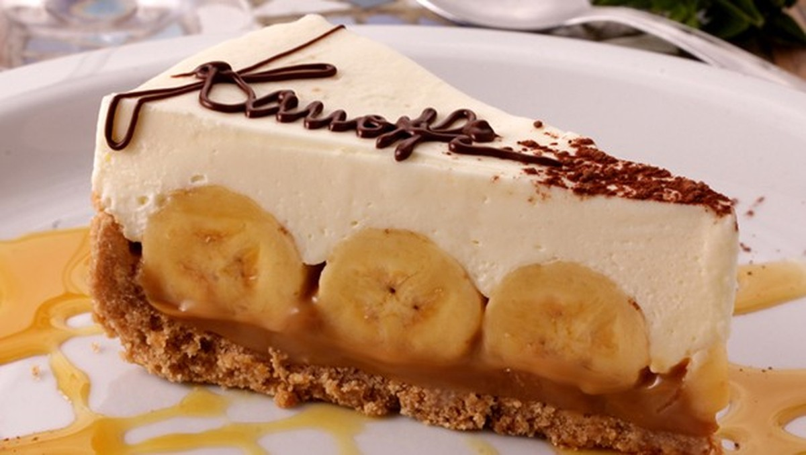

Banoffee #1
- x2 pacote de biscoito maisena
- 100 g de mantega sem sal
- x2 latas de doce de leite ou 500 g
- x4 bananas em rodelas
- x1 xícara de açúcar
- 600 ml de nata
- Canela em pó (a gosto)
Modo de Fazer:
- Triture os biscoitos e acrescente a manteiga e a canela em pó;
- Coloque em uma refratária ou assadeira de mais ou menos 20 por 30 cm;
- Leve ao forno a 150 graus para assar um pouco até ficar macio;
- Deixe esfriar. Fica sequinho e crocante;
- Por cima coloca o doce de leite;
- Coloque as bananas cortadas em rodelas sobre o doce de leite;
- Bata na batedeira a nata com o açúcar refinado;
- Sobre as bananas coloque esta nata batida;
- Por último polvilhe a canela em pó.